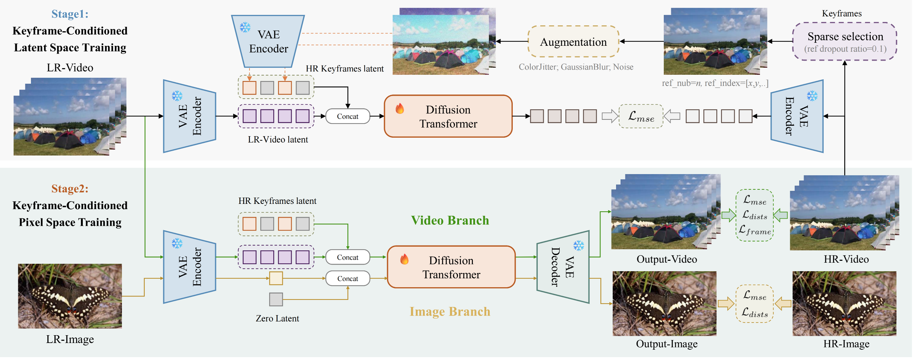

1Texas A&M University 2YouTube, Google
† Corresponding author

Keyframe-conditioned two-stage training pipeline of SparkVSR. (1) Stage 1 (Latent Space Training): Augmented HR keyframe latents are concatenated with LR video latents to optimize the Diffusion Transformer using $\mathcal{L}_{mse}$. (2) Stage 2 (Pixel Space Training): A joint video-image training mechanism is employed. The video branch is conditioned on HR keyframe latents, while the image branch uses a zero latent. Finally, outputs are decoded by the VAE and refined in the pixel space using mixed losses.
Swipe or use arrows to browse more results in each category
💡 Drag the slider left/right to compare input and super-resolution result. Use arrows to browse more clips.
@article{sparkvsr2025,
title={SparkVSR: Your Paper Title Here},
author={Author One and Author Two and Author Three and Author Four and Author Five},
journal={arXiv preprint arXiv:XXXX.XXXXX},
year={2025}
}